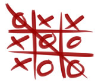
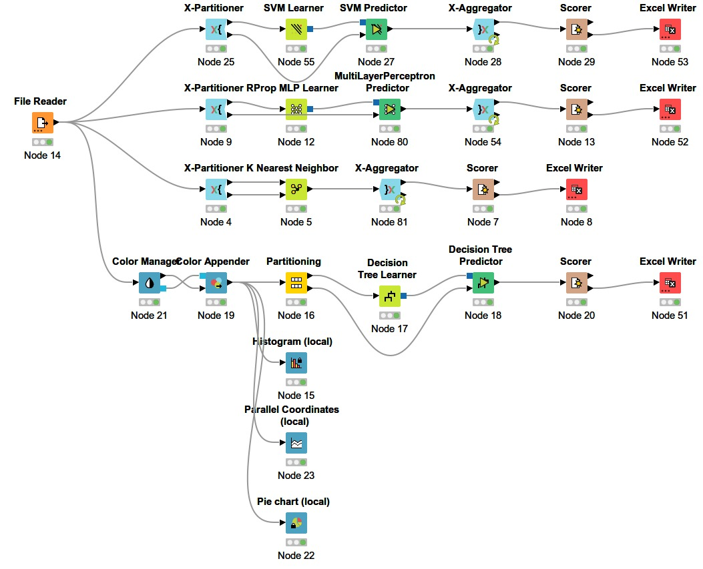
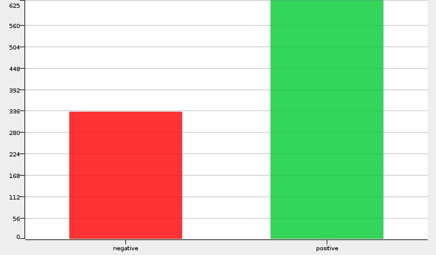
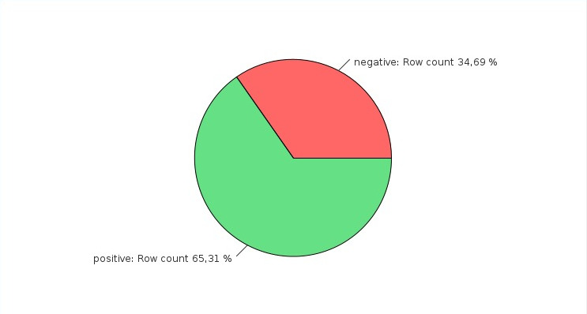

Base de dados escolhida: Tic-Tac-Toe Endgame Data Set
Informações da base de dados
Informações do atributo
- quadrado superior esquerdo: {x,o,b}
- quadrado superior central: {x,o,b}
- quadrado superior direito: {x,o,b}
- quadrado central esquerdo: {x,o,b}
- meio-meio-quadrado: {x,o,b}
- quadrado central direito: {x,o,b}
- quadrado inferior esquerdo: {x,o,b}
- quadrado inferior-meio: {x,o,b}
- quadrado inferior direito: {x,o,b}
- Classe: {positivo, negativo}
justicativa da escolha da base de dados
O motivo inicial da escolha da base de dados, foi a mesma ser um jogo que apesar de parecer simples, tem uma gama de possibilidades muito alem do imaginado, com 9 atributos que podem ser preenchidos com [X], [O] ou ficar em branco [B], se tem uma quantidade de 958 possibilidades diferentes.
 
Melhor algoritmo de treinamento: K-Nearest Neighbors (KNN)
Apos analises foi verificado que o melhor algoritmo para treinamento da IA foi o K-Nearest Neighbors, conforme descrito abaixo:- Classificação correta: 808
- Classificado errado: 149
- Precisão: 84.431%
- Erro: 15.569%
- coeficiente kappa de Cohen (k): 0,623%